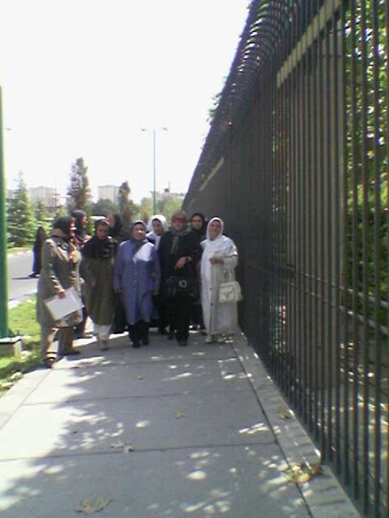

پذيرش > تریبون > گزارش كمپين > ائتلاف زنان نتیجه داد
 مجلس در تسخیر نمایندگانی از فعالان زن مجلس در تسخیر نمایندگانی از فعالان زن

 ائتلاف زنان نتیجه داد ائتلاف زنان نتیجه داد
11 شهریور 1387 - آیدا سعادت، محبوبه حسین زاده - نسخه قابل چاپ
تغییربرای برابری:دیروز 10 شهریور حدود 50 نفر از فعالان حوزه زنان به مجلس رفتند تا در دیدارهای حضوری اعتراض خود را به تصویب لایحه حمایت از خانواده اعلام کنند.
با اعلام قرارگرفتن لایحه حمایت از خانواده در دستور کار مجلس و قوت گرفتن شایعاتی مبنی بر تصویب این لایحه در شور اول مذاکرات مجلس شورای اسلامی که در برخی رسانه ها اعلام شده بود ظهر روز گذشته حدود 50 نفر از زنان سرشناس و فعال در حوزه های مدنی، سیاسی، اجتماعی ، از جمله وکلای دادگستری و روزنامه نگاران با حضور در سالن ملاقات با نمایندگان مجلس شورای اسلامی و دفاتر بسیاری از نمایندگان مجلس اعتراض خود را به تصویب چنین لایحه ای اعلام کرده و دیدگاه ها و نقدهای خود را به صورت حضوری به اطلاع نمایندگان مجلس رساندند. این دیدار ها که به صورت فردی و جمعی با نمایندگان مجلس صورت گرفت همزمان بود با خروج این لایحه از دستور کار مجلس و در همین ارتباط لاریجانی رئیس مجلس شورای اسلامی اعلام کرد با توجه به این که جمعی از شهروندان به ویژه زنان و نیز برخی علما نسبت به مواردی در این لایحه ابراز نگرانی کرده و نقدهایی را مطرح کرده اند این لایحه با استفاده از اختیارات هیأت رئیسه مجلس به کمیسیون حقوقی و قضائی بازگردانده شده است تا مفاد آن را با رویکرد کارشناسانه مورد بررسی قرار دهند.

در یکی از دیدارهای انجام شده با نمایندگان مجلس، شیرین عبادی، رخشان بنی اعتماد،سیمین بهبهانی به همراه تعدادی دیگر از فعالان زن با فرهاد تجري، نايب رئيس كميسيون حقوقي مجلس گفتگو کردند.
شیرین عبادی برنده جایزه صلح نوبل ضمن ارائه نامه اعتراضی خود به نایب رییس کمیسیون حقوقی مجلس گفت: "این لایحه چنان با مهارت تنظیم شده است که توانسته است اعتراض طیف های گوناگون فعالان زن تا گرو ههای مذهبی و سنتی را در پی داشته باشد." او با اشاره به لزوم کار کارشناسی جامع در مورد لایحه حمایت از خانواده خواستار بازگرداندن آن به کمیسیون حقوقی و قضائی مجلس و یا هیأت دولت شد و گفت: "از دید زنان مختلف اجتماع و بسیاری از مردانی که به عدالت انسانی باور دارند این لایحه دارای اشکالات عمده ای است که دو مورد از آن عمده تر است. درخواست داريم كه اين لايحه قبل از طرح در صحن علني مجلس براي شور اول، براي انجام كارشناسي هاي مجدد به كميسيون قضائي و حقوقي مجلس و يا به هيات دولت بازگردانده شود تا پس از تغييرات عمده و اساسي در مجلس مطرح شود. نمايندگان ما در مجلس جمع نشده اند كه با مردم لج كنند و بايد به خواسته هاي منطقي و برحق مردم اهميت بدهند". عبادی ادامه داد: " موسسه كيفرشناسي دانشگاه تهران، مطالعاتي در مورد افزايش شوهركشي در جامعه انجام داده است. آيا مجلس نمي خواهد از اين مطالعات در قانون گذاري استفاده كند ؟ آيا قرار نيست ريشه هاي بروز جرم در جامعه از بين برود؟ مسلم است وقتي روند طلاق براي زنان طولاني و حتي غيرممكن است، افراد براي رهايي از وضعيت موجود مرتكب خطا و جرم مي شوند. چرا در حالي كه طبق شرع، طلاق خلع احتياج به زضايت شوهر ندارد، اما در ايران اين امر مكول به اجازه شوهر شده است؟ مشكل ما نه فقط اين لايحه بلكه قوانيني است كه باعث افزايش جرم مي شوند. درخواست مان هم اين است كه نمايندگان جامع نگري داشته باشند و از تجريبت و نظرات حقوق دانان، روان شناسان و جامعه شناسان در تنظيم لوايح استفاده كنند."
سیمین بهبهانی، شاعر و نویسند نیز در دیدار با تجری گفت: هر چند به نمایندگان مجلس هشتم رای نداده ام اما دلیل حضور امروزم دراین جمع این است که با لایحه ای مواجه شده ایم که برای ما زنان تحصیلکرده که موهایمان در این مملکت سفید شده است بسیار ناخوشایند است و دیگر این که می خواستم نحوه برخورد شما با موکلانتان را بببینم تا بدانم آیا می توان به این مجلس امید داشت؟"
رخشان بنی اعتماد، کارگردان، نیز با طرح اعتراض خود به این لایحه به دبیر کمیسیون حقوقی و قضایی مجلس گفت: "آنچه ما را دچار مشكلات، سوءتفاهم و بحران مي كند نگاه سياسي به مشكلات اجتماعي است. در طول اين سالها در دل مشكلات مردمي بودم كه در ناكجاآبادها زندگي مي كنند. اما تا از مشكلاتي صحبت مي كرديم كه با پيشگيري مي شد جلوي رسيدن آن به مرز بحران را گرفت، مي گفتند حرفي نزنيد. ما ادعا داريم كه نهاد خانواده، بالاترين جايگاه را در كشور دارد ولي واقعيت اين است كه خانواده هاي ايراني دارند زير فشار له مي شوند و شانه هاي نحيف پدران و مادران است كه بايد فرزندان خانواده را از بي هويتي خارج كند. اين لايحه مي تواند در اين شرايط، اين نهاد ضعيف و رنجور را به تباهي بكشاند. پس وقتي در مجلس از اين لايحه صحبت مي كنيد به عنوان يك پدر به ابن لايحه نگاه كنيد."
تجری دبیر کمیسیون حقوقی و قضایی مجلس در پاسخ به انتقادات مطرح شده گفت: "مواردي كه باعث اعتراض شما شده است در لايحه تقديمي قوه قضائيه وجود نداشته است چون رويكرد قوه قضائي حركت به سمتي است كه مورد انتظار شهروندان و جامعه بين المللي است. اين موارد توسط دولت به لايحه اضافه شده است هرچند در مصاحبه اي اعلام كرده اند كه قصد دولت، محدود كردن ازدواج مجدد و تعدد زوجات بوده است اما آن چه برداشت مي شود متاسفانه خلاف اين است."
وی با اشاره به این که خود و برخی دیگر از نمایندگان نیز مخالف ماده 23 در این لایحه هستند ادامه داد: "نمي توان ارزش لايحه اي را فقط به دليل چند بند زير سوال برد. به همين دليل حتي اگر كليات اين لايحه در مجلس تصويب شود، اين ماده و ديگر موادي كه معادلات حقوقي و اجتماعي جامعه را به هم مي زنند، اصلاح مي شود. كميسيون هاي فرعي رسيدگي به لايحه هم مشخص شده است و قرار است كليه مسائل اجتماعي و اقتصادي اين لايحه مورد بررسي قرار گيرد و با تلفيق نظرات كارشناسي آنها، لايحه اي بروز تنظيم شود."
تجری افزود: " نمایندگان قصد ندارند بر خلاف جهت جامعه شنا کنند و کشور در وضعیت فعلی نیازمندی های دیگری دارد و ضرورتی ندارد که قانونی مدون کنیم که با حقوق زنان بازی کند و جای سوء استفاده را باز کند. در جامعه كنوني ما اكثر علما و بزرگان ديني هم با اين مقوله مخالف هستند و كمتر كسي است كه وارد اين فاز شده باشد. خودم قبلا قاضي بودم و شاهد بسياري از موارد خودكشي، خودسوزي و همسركشي بودم و مسلما در تصويب لوايح تمام تلاش من و ديگر اعضاي كميسيون حقوقي اين است كه به سمت قانون بروز و كارآمد حركت كنيم."
اما نماینده دیگر مجلس فاطمه آلیا با برخوردی نامناسب با الهه کولایی حاضر به گفتگو با وی نشد و ضمن حمایت تلویحی خود از لایحه حمایت از خانواده با الفاظی تند کولایی را به خط گرفتن از جایی متهم کرد. این در حالی بود که فاطمه آلیا جمع پانزده نفره ای از فعالان زن از جمله مادران صلح را که درخواست ملاقات کرده بودند، به حضور نپذیرفت ولی در نهایت قرار مذاکره با آنان را به صبح امروز موکول کرد.
شهلا فروزانفر یکی از این افراد و از اعضای گروه مادران صلح در این رابطه گفت: ما به دفتر خانم آلیا مراجعه کردیم و به ما گفته شد که هماهنگی از قبل صورت نگرفته است. از ایشان خواستیم وقتی را در اختیار این گروه بگذارند و در نهایت قرار شد فردا ساعت یک ربع به هشت در دفتر ایشان حضور داشته باشیم. فاطمه آجرلو و سایر زنان افتخاری هم به هیچ وجه حاضر نشدند بدون وقت ما را بپذیرند والبته همه دردفترهایشان حضور داشتندبا این وصف ما علت حضورمان را به این نمایندگان اعلام کردیم و نامه های خود را نیز به ایشان تحویل دادیم. فروزانفر افزود دو نفر از افراد مادران صلح همچنین با نمایندگان مشهد دیدار کرده اند و نامه ی خود را به وی داده اند.
نسرین فرهومند از گروه تلاش گران سلامت اشاره کرد که با یک گروه 5 نفره به دیدار 17 نفر از نمایندگان رفته اند و با نمایندگان شمال قرار بود دیدار کنیم اما در اتاق هر نماینده ای که باز بود را زدیم و دلیل حضورمان در مجلس را با آنها در میان گذاشتیم. اعضای شرکت کننده از مادران صلح در این گروه اظهار داشتند که صبح امروز در مجلس حضور خواهند یافت و نامه و مستندات دیگری که در این رابطه موجود است را برای نمایندگان خواهیم برد و به این موضوع اشاره کردند که نمایندگان دیگری هم هستند که با این لایحه مخالف هستند و از ایشان خواسته شده در مراجعه ی آتی خود به دیدار این نمایندگان از جمله نماینده کرج و تعدادی از نمایندگان تهران اشاره کردند.
در دیداری دیگر گروهی از حقوقدانان شامل زهره ارزنی، اشرف گرامی زادگان، گیتی پورفاضل، شهین دخت مولاوردی و مریم کیان ارثی با نصیری، نماینده زنجان و حسینی نماینده خوی گفتگو کردند. زهره ارزنی وکیل دادگستری در این رابطه گفت: "با آقای حسینی نماینده خوی صحبت کردیم و ضمن ارائه نامه ی خود و اشاره به ابهامات بسیار زیاد و اشکالات فراوان این لایحه از وی خواستیم برای مسکوت ماندن لایحه تلاش کند. زهره ارزنی اضافه کرد مسکوت ماندن یک لایحه به این ترتیب است که نمایندگان با توجه به ایرادات لایحه می گویند که این لایحه جوابگو نیست و به مدت زمان مشخصی که اعلام می شود برای بررسی های بیشتر به کمیسیون مربوطه و یا مرکز پژوهش ها ارجاع می شود که اشکالات آن را بررسی کنند. با توجه به این که خارج کردن این لایحه از دستور کار مجلس برای همیشه چندان عملی نیست مسکوت گذاشتن این لایحه می تواند فرصتی باشد که در بررسی های کارشناسی اشکالات عمده ی این لایحه برطرف شود . برای مسکوت گذاشتن یک لایحه نصف بعلاوه یک نفر از نمایندگان باید با ارائه دلایل خود و با تعیین مدت مشخصی درخواست مسکوت گذاشتن لایحه را مطرح کنند. "
گیتی پورفاضل نیز دیدار خود با نصیری نماینده زنجان و عضو فراکسیون اقلیت مجلس را موثر و مثبت قلمداد کرده و گفت ما نقطه نظراتمان را برای ایشان توضیح دادیم و ایشان نیز یادداشت کردند و قرار شد در دیدار دیگری هم نقطه نظرات خود و هم ایراداتی را که به لایحه وارد می دانیم، به صورت مکتوب به ایشان ارائه کنیم . پور فاضل همچنین گفت:" بهتر است با نمایندگان اصولگرا که قرار است در موافقت با لایحه در مجلس صحبت کنند، بیشتر وارد مذاکره شویم. ما قرارگذاشتیم از فردا به دیدار های خود در قالب گروه های دو یا سه نفره با نمایندگان اصولگرای مجلس ادامه دهیم.»
نماینده زنجان در این دیداربا ابراز مخالفت با لایحه به این حقوقدانان قول داد تمامی اقداماتی را که در این جهت ممکن است، انجام دهد.
اشرف گرامی زادگان به دیدار خود با نصری نماینده زنجان اشاره کرد و گفت: "به این نماینده پیشنهاد کردیم که مسکوت بگذارند و راه رابرای کار کارشناسی رو ی لایحه باز بگذارند. نمایندگان زن و زنان دولت مانند مرکز امور زنان و خانواده و سایر دولتی هاروی این لایحه هیچ کار کارشناسی انجام نداده اند اما ما به این نماینده اعلام کردیم که کارشناسان حقوقی و فعالان زن آمادگی کامل دارند به صورت داوطلبانه در این کار همراهی کنند. "
هم زمان، فخر السادات محتشمی پور، فریده ماشینی با تعدادی از اعضای هیات رییسه مجلس دیدار کردند. غفوری فرد ، ناطق و طلایی از اعضای هیأت رئیسه ی مجلس نیز در این دیدار اظهار کردند به دلیل تبعاتی که لایحه دارد تلاش می کنیم که این لایحه مورد کارشناسی های بیشتر قرار گیرد.
در همین رابطه فریده ماشینی اظهار داشت: "در مورد جزئیات لایحه با اعضای هیأت رئیسه مجلس صحبت کردیم و آقای طلایی گفتند که من در جریان اشکالات و نیز نقدهای وارد شده به لایحه هستم و تلاش خود را برای توجه دادن سایر نمایندگان به این نقد ها خواهم کرد." ماشینی همچنین به صحبت های غفوری اشاره کرد که گفته بود حضور شما زمانی می تواند موثر باشد که شما کار کارشناسی کرده باشید و ما هم گزارش کارهای کارشناسی را که روی لایحه انجام داده ایم، به ایشان ارائه کردیم. "
احمد ناطق نوری و حسن غفوری فرد با شنیدن انتقادهای آنان از لایحه حمایت از خانواده از تصمیم زنان برای دیدار با نمایندگان مجلس استقبال کردند و پیشنهاد ادامه دیدارها با دیگر نمایندگان مجلس را مطرح کردند.
موسی قربانی از اعضای هیأت رییسه مجلس و عضو کمیسیون قضایی نماینده ی دیگری بود که در دیدار با لاله صدیق، شادی صدر، نسرین افضلی، مریم مجد و دو تن از اعضای هیاتهای مذهبی زنان خبر داد كه با نظر رئيس مجلس و موافقت هيات رئيسه قرار شده لايحه مذكور به كميسيون قضائي برگردانده شده و فعلا از دستور كار جلسه علني خارج شود. وی همچنین تاکید کرد که ماده 25 (مالیات بر مهریه) قطعا از دستور کار خارج خواهد شد.
در ادامه ی این دیدارها شهلا شرکت به همراه مریم قنبری و عارفه الیاسی با نمایندگان ماهشهر، لنگرود، رشت، بندرلنگه و مرودشت دیدار کردند. آنها نامه این گروه از وکلا را که حاوی 15 پیشنهاد اصلاحی در مورد لایحه حمایت خانواده بود در دست داشتند و دلایل خود را برای مخالفت با کلیات لایحه اعلام کرده و گفتند مشکل ما تنها ماده 23 لایحه نیست و این لایحه حتا به لحاظ شکلی هم ایراد دارد.
فعالان زنان در دیدار با نمایندگان مجلس نامه های اعتراضی خود را به تعداد زیادی از نمایندگان تحویل داده و در قالب گروه های چند نفره نسبت نگرانی های جدی خود از تبعات تصویب چنین لایحه ای را با نمایندگان در میان گذاشتند. در حالی که بسیاری از نمایندگان مجلس از این دیدارها استقبال کردند تعدادی از نمایندگان طیف اصولگرای مجلس از جمله زنان، حاضر به دیدار با فعالان زن نشده و این ملاقات را موکول به هماهنگی های بیشتر کردند و به همین منظور گروه های دیگری از زنان در حال برنامه ریزی برای ملاقات با نمایندگان اصولگرای مجلس در روزهای آینده هستند.
گفتنی است در دیدار دیروز با نمایندگان مجلس ژیلا بنی یعقوب، خدیجه مقدم، آسیه امینی، منصوره شجاعی، مینو مرتاضی، شادی صدر، محبوبه عباسقلی زاده، خانم گوارایی، گوهر شمیرانی از جمله حاضرین در این ملاقات ها بودند.
عکس از کانون زنانی ایرانی
ارسال به
بالاترین
،
توییتر
،
فریندفید
،
فیسبوک
در همين بخش :
 دهمین دورۀ مراسم تندیس صدیقه دولت آبادی ۱۳۹۲ دهمین دورۀ مراسم تندیس صدیقه دولت آبادی ۱۳۹۲
کارت پستالهایی به بهانهی هشت مارس و به یاد همهی مبارزین راه برابری
بیانیه بیش از 350 تن از مدافعان حقوق زنان به مناسبت روز جهانی زن؛ زنان هر روز فرودستتر میشوند
لباسی که برای تن ما دوخته اند! /اعظم بهرامی
چالشها و چشمانداز فعالیت مدنی زنان
ديگر بخش ها :
طرح یک میلیون امضا
|
مقالات
|
سایت نوشته ها
|
اخبار
|
گزارش كمپين
|
گفت و گو
|
علیه سکوت
|
كوچه به كوچه
|
نامه های شما
|
گزارش ویژه
|
گفتگو با اعضا
|
ویژه سالگرد کمپین
|
تصویر برابری
|
دل آرام علی
|
تریبون
|
مقالات
|
تاریخ شفاهی
|
خارج از چارچوب
|
کتابخانه
|
درباره کمپین
|
کمپین در شهرها
|
کمپین در بند
|
صدای تغییر
|
ویژه 22 خرداد
|
لایحه حمایت از خانواده
|
گالری
|
عشا مومنی
|
امیر یعقوبعلی
|
خدیجه مقدم
|
راحله عسگری زاده و نسیم خسروی
|
پروین اردلان،جلوه جواهری، مریم حسین خواه، ناهید کشاورز
|
زینب پیغمبرزاده
|
سعیده امین، سارا ایمانیان، محبوبه حسین زاده، ناهید کشاورز و همایون نامی
|
احترام شادفر
|
نسیم سرابندی زاده،فاطمه دهدشتی
|
وبلاگ مهمان
|
پرونده خرم آباد
|
دستگیری ها
|
مریم مالک
|
پرستو اللهیاری
|
مهرنوش اعتمادی
|
سمیه رشیدی
|
Other Languages
|
همراهان
|
«فراخوان کمپین ده روز با بهاره هدایت»
| English
|